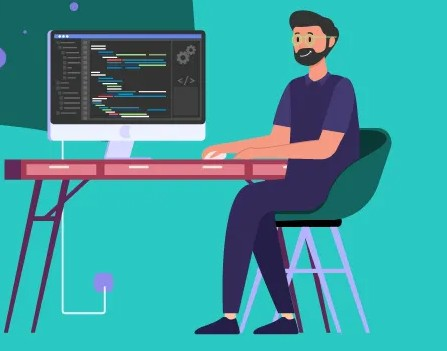

Já faz um tempo que estou estudando programação, desenvolver uma AI, apenas auxiliar nos estudos, o que significar que tenho maior compreenção e rapidez de entendimento do que qualquer outra pessoa, com algoritimos que avaliar meus estudos e minhas competencias sugerido o que devo estudar. Como pessoa quero crescer como profissional e alcança limite incriveis, com virtudes que considero essencias de um bom profissional de auto nivel, foco, determinação, disciplina, inteligencia e muito estudos intenso, desenvolvendo compentencias estraordinarias, portanto habilidades que não tenho hoje, amanhã vou conseguir concerteza, sim de fator evoluo de maneira impressionante, como profissioal que é o futuro da programação, sei que estou mais que pronto,pra engresa numa empresa que tem as mesma compentencias, e visa crescer e ser grandes referencial pra outros.
Meu sonho é torna o mundo um lugar melhor, desenvolver soluções eficientes pra ajudas as pessoas, Eu acredito que a tecnologia é o futuro, e claro programação não chegou o apice, tem muitas coisas ainda a ser desenvolvidas, as pessoas a sociedades ja provaram que não são eficientes pra resolver problemas por si mesma, a tecnologia vem pra resolver problemas sociais que nunca foram solucionados, a tecnologia vem pra reorganizar a sociedades e promover ordem, torna a sociedade mais unida, e entender os problema é o inicio da solução a a tecnologia é eficiente em compreender. Eu como programador, sou grato pra ser parte fundamental nesse processo. Meu sonnho é desenvolver soluções que visam transformação e bem está e sei que minhas contribuições na tecnologia vai contribuir, para o mundo seja um lugar melhor.
Necessidade de ter uma vida que fosse mais eficientes mais praticas e sempre tive dentro de mim,a inspiração de densenvolver, criar conteudos que as pessoas podesse interagir, mais pelo lado de jogo e aplicativo do que criar outros tipos de conteudos.
